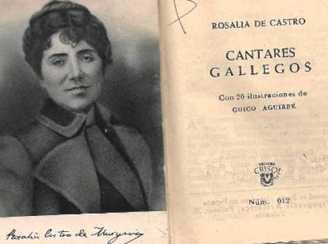

María Rosalía Rita de Castro (Santiago de Compostela, 23 de febrero de 1837-Padrón, 15 de julio de 1885) fue una poetisa y novelista española que escribió tanto en gallego como en castellano. Considerada entre los grandes poetas de la literatura española del siglo XIX
Nació en la madrugada del 23 de febrero de 1837 en una casa localizada en el margen derecho del Camiño Novo (Santiago de Compostela), la antigua vía de entrada a la ciudad de Santiago de Compostela para todos aquellos viajeros procedentes de Pontevedra. Hija natural del sacerdote José Martínez Viojo (1798-1871) capellán de la iglesia de Iria12 y de María Teresa de la Cruz Castro y Abadía (1804-1862),13 de familia hidalga, soltera de escasos recursos económicos, fue bautizada a las pocas horas de su nacimiento en la Capilla del Hospital Real por el presbítero José Vicente Varela y Montero, con los nombres de María Rosalía Rita13 y figurando como hija de padres desconocidos. Con frecuencia los biógrafos de la escritora gallega han ocultado la condición eclesiástica de su padre, así como también trataron de obviar el hecho de que fue registrada como hija de padres desconocidos y que se libró de entrar en la Inclusa al hacerse cargo de ella su madrina María Francisca Martínez, fiel sirviente de la madre de la recién nacida.
En abril de 1856, Rosalía se trasladó a Madrid junto con la familia de su pariente María Josefa Carmen García-Lugín y Castro, en cuya compañía habitó la planta baja de la casa número 13 de la calle Ballesta.1617 No se conoce con exactitud cuál fue el motivo que llevó a mudarse a la escritora, aunque Catherine Davis creyó posible que este hecho fuese debido al escándalo desencadenado a raíz del Banquete de Conxo, en el que desarrollaron un papel relevante varios miembros del Liceo, como fueron Aguirre o Pondal. Un año después de llegar a Madrid, Rosalía publicó un folleto de poesías escrito en lengua castellana que recibió el título de La flor, siendo este acogido con simpatía por parte de Manuel Murguía, quien hizo referencia a él en La Iberia.16
Los últimos años de la vida de Rosalía transcurrieron en la comarca de Padrón, lugar en el que había pasado su infancia, así como buena parte de su juventud. La Casa grande de Arretén, nombre popular con que el que se conocía al pazo en el que había nacido su progenitora, ya no era de la propiedad de la familia, factor que propició que la escritora tuviese que residir en las Torres de Lestrove entre 1879 y 1882 mientras su marido se encargaba de la dirección en Madrid de La Ilustración Gallega y Asturiana. Finalmente, se trasladó junto con su familia a la casa llamada de La Matanza, situada en la parroquia de Iria.
Fue el 17 de mayo de 1863 cuando Manuel Murguía hizo entrega al impresor vigués Juan Compañel del manuscrito de Rosalía de Castro, Cantares gallegos, obra iniciadora del Rexurdimento pleno. Para comprender el origen de esta, hay que tener presentes factores tales como la familiaridad de la poeta con la música popular, la reivindicación romántica de las culturas tradicionales y de sus manifestaciones populares. Tal fue el éxito alcanzado por la obra que Rosalía de Castro fue invitada a participar en los Juegos Florales de Barcelona, aunque declinó el ofrecimiento. Además, escritores lusos de la generación de 1865, como son Antero de Quental o Teófilo Braga, manifestaron con prontitud su admiración por el libro, para en 1868 ser vertidos al catalán dos de los poemas de este por parte de Víctor Balaguer.
En Cantares gallegos se encuentran recogidos cuatro núcleos temáticos fundamentales, que son el costumbrismo, el amor, el intimismo y en último lugar, el social-patriotismo.
Calificada como la obra más rica y profunda de Rosalía, Follas novas fue y sigue siendo considerada por buena parte de la crítica como el libro de transición entre la poesía colectiva de Cantares gallegos y el radical intimismo de En las orillas del Sar, en el que se da cabida a poemas de corte popular hasta creaciones que tratan el paso del tiempo y la muerte. También se caracteriza por ser una obra que tiene como trasfondo una notable intención social, que se manifiesta en la denuncia que la autora hace de la marginación del sexo femenino, de los niños huérfanos y de los campesinos, especialmente de aquellos que se habían visto en la obligación de emigrar ante las pésimas expectativas económicas del país.
Los núcleos temáticos básicos de Follas novas son dos: por un lado se diferencia un tipo de poesía subjetiva, que se corresponde con los dos primeros apartados en que se estructura el libro (Vaguidades y Do íntimo), donde la autora desenvuelve un discurso existencial pesimista y angustiado. Por otro lado existe una poesía objetiva, correspondiente a los apartados cuarto y quinto (Da terra y As viúvas dos vivos e as viúvas dos mortos), en la que se insiste en el aspecto reivindicativo de lo popular y del hombre gallego, y donde se tratan temas que ya aparecieran en Cantares gallegos, como la emigración y la injusticia social. En el apartado tercero (Varia) coexisten trazas de la poesía objetiva y la subjetiva enseñando el complejo carácter que ofrece la realidad en toda su extensión para servir de puente entre la subjetividad de Do íntimo y la objetividad de Da terra.
{kind=link}